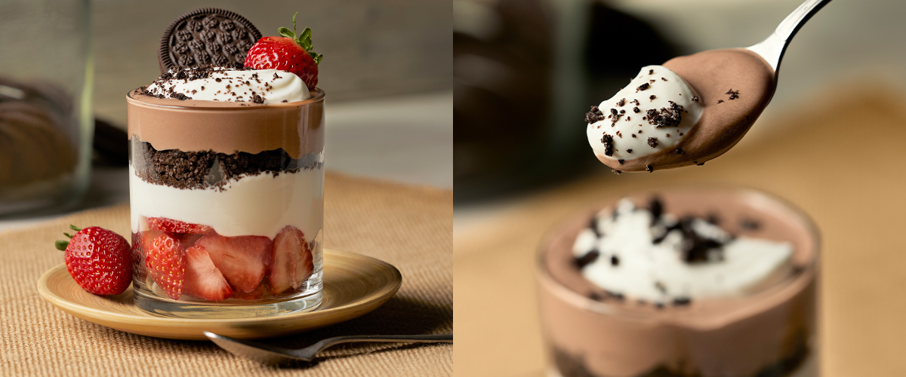

chocolade-aardbeienparfait:
Dit is een nagerecht dat eenvoudig te maken is en dat zeker in de smaak zal vallen bij zowel jonge als oudere mensen.
Ingredienten
- 1 pot vanille-ijs
- 1 pakje bevroren fruit (bijvoorbeeld aardbeien, frambozen of blauwe bessen)
- 4 eetlepels chocoladesaus
- 4 eetlepels slagroom
- Optioneel: verse aardbeien of ander fruit, geraspte chocolade of nootjes om te garneren
Beredingswijze
- Laat het ijs en het bevroren fruit op kamertemperatuur komen zodat ze makkelijker te verwerken zijn.
- Verdeel de bevroren aardbeien over de bodem van elk van de 4 glazen of borden.
- Schep een bolletje vanille-ijs bovenop de aardbeien.
- Verdeel de chocoladesaus over het ijs.
- Spuit of schep een lepel slagroom over het ijs en de chocoladesaus.
- Garneer het nagerecht met verse aardbeien, geraspte chocolade of nootjes, naar smaak.
- Serveer het nagerecht meteen of zet het in de koelkast totdat je het wilt serveren.

Pro Tip neem altijd voldoende tijd om je ingredienten te lezen voordat je begint met koken.